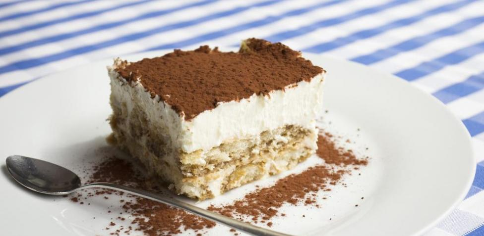

Ahora empezaremos a prepararlo
- Preparamos el café y lo dejamo enfriar unos 20 mins
- Separamos las yemas de las claras y empezamos a batir las yemas, luego hechando azúcar hasta blanquear la mezcla, deberia de quedar una crema color amarillo
- Mojamos los bizcochos con el café frío y los ponemos de base en un molde cuadrado o rectangular
- Extendemos la crema y el queso por encima
- Espolvoreamos con una fina capa el cacao en polvo, lo dejamos reposar en la nevera por un dia entero
